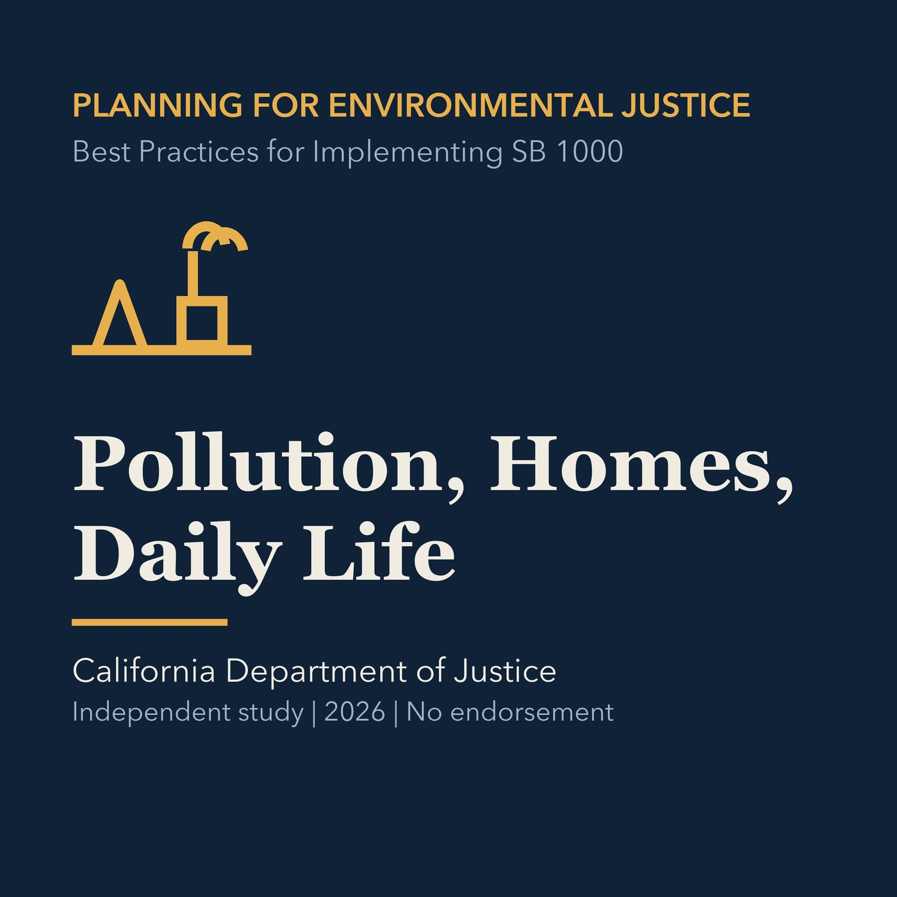

EPISODE 05
Pollution, Homes, and Daily Life
Reviews pollution exposure, compounded health risk, food access, and safe and sanitary housing as connected planning subjects.

- Stable GUID
892764c7-b440-5da3-9f1e-a768d092e40f- Release
- environmental-justice-land-use-planning-v2026.2
- SHA-256
ca529b2d628c4cef186b1927bc76ddba23780d0ecfcd6253a5bcc1a0c6bb6097